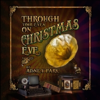

Through Your Eyes on Christmas Eve (2012)
Holiday
| Artist | Abney Park |
|---|---|
| Year | 2012 |
| Genre | Holiday |
| Tracks | 11 |
Track List
| 1 | Through Your Eyes on Christmas Eve | 3:22 |
| 2 | O Holy Night | 5:04 |
| 3 | We Three Kings | 3:08 |
| 4 | Jingle Bells | 2:06 |
| 5 | Santa Claus Is Coming To Town | 2:26 |
| 6 | Winter Wonderland | 3:27 |
| 7 | Baby It's Cold Outside | 2:40 |
| 8 | Little Drummer Boy | 5:46 |
| 9 | Zat You Santa Claus | 3:06 |
| 10 | Twelve Days Of Christmas | 3:49 |
| 11 | Dance of the Sugarplum Fairy | 2:08 |